Local LLM + Unknown Agent Harness on macOS: What an Endpoint Sensor Can Prove
All facts below were observed on my Apple Silicon Mac (macOS, SIP enabled), with a sensor built for this research (section 2), in four recorded runs.
About this document
The scenario: an employee runs a local model in LM Studio or Ollama and points an agent harness at it, possibly as root. The question: what can an endpoint sensor prove about that setup, and what can it not.
The method: a small sensor built from four data sources on one Mac, and four recorded runs (section 3). Each run states its claim before it is run and its result after, with the evidence as screenshots. Section 4 lists what the sensor cannot see and where the chain of reasoning breaks. Section 5 says what this means for a sensor, from the runs alone, and ends with what was proven and what was not.
1. How the data was collected
The question is not which tool to run but which data source answers which part of the detection chain. The chain has four parts:
- the model process: holds the weights behind a listener - turns text into text, never touches the machine.
- the harness: the program that sends the prompt and the tool list to the model and executes the tool calls it gets back, with its own permissions.
- what the harness did: its child processes.
- what was said: the prompt, the tool list, the tool calls on the wire.
Each source below exists because one of these four has no other source.
| Layer | What it gives | How (mechanism on this Mac) | Why we need it (what has no other source) |
|---|---|---|---|
| L0 disk | model identity (name, architecture, quant, tensor count), template text and hash, distributor differences | GGUF header parser (stdlib), Ollama blobs by magic, sha256 with cache | what the model is. The kernel gives a file path; only the file itself tells which model it is and which chat template will run. |
| L1 socket events | TCP listeners and loopback connections with both pids, as they happen. Plus what already exists when the sensor starts. | ntstat, the private NetworkStatistics framework behind nettop and Activity Monitor. The kernel pushes every socket open and close with its pid. |
the harness. The loopback connection between harness and model can only come from a network-side source. |
| L2 kernel events | process lifecycle: every exec with argv, env, euid, code signature and parent; fork; exit. file access: every open/mmap with the path. |
Apple Endpoint Security, consumed through Apple's own signed client /usr/bin/eslogger, JSON on stdout |
the model process, and what the harness did. Which pid mapped the model file, and every process the harness spawned. |
| L3 payload | system prompt, tools[], tool calls, tool results, model name, on every request/response |
tcpdump -i lo0, all loopback traffic except the sensor's own stack. |
what was said. The permissions the harness gave the model (the tool list) and what the model decided (the tool calls). |
Each layer is blind to what the next one sees: L0 files, not activity. L1 connections, not who is inside them or what they carry. L2 processes and files, not network or content. L3 bytes, not processes (the pid comes from L1, joined by flow id).
Privilege: L0 and L1 run as the user, L2 and L3 need sudo. Nothing needs an Apple entitlement or SIP off (for this PoC I found ntstat and eslogger sufficient).
2. The pipeline
The goal of the PoC is to reveal what we actually can see and what not, and also to connect all the dots from the findings. I built a small sensor with all 4 collectors based on the layers discussed in the last section. One capture session runs the four collectors side by side on the endpoint and produces a single event stream. Every event carries its layer, the run id, the pid where the source has one, and a small set of tags that say what the event means for the chain: model file mapped, engine loaded, listener, loopback flow with both pids, harness exec, harness child, tool declared, tool call emitted. The stream is indexed in a local Elasticsearch for my investigation.
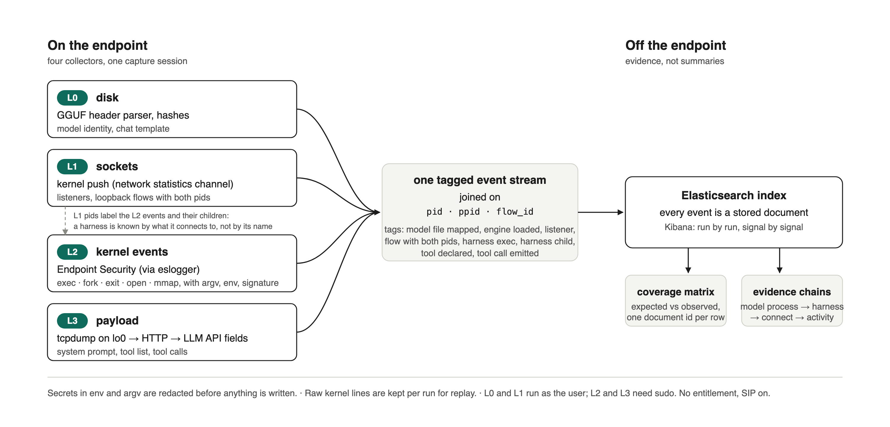
Two rules hold throughout. The L1 socket events name which pids are the model server and the harness → those pids then label the L2 events and their descendants, so a harness is identified by what it connects to, never by its name. Secrets in environment and argv are redacted before anything is written.
3. The runs
Each run tests one claim, written before the run. Observed is what Kibana shows for that run; Result is the comparison.
Note: the harness in R1 and R2 is a 90-line script written for this research (standard OpenAI chat API, one tool run_shell, hardcoded URL, no config, no env).
| Run | Name |
|---|---|
| R1 | Unknown harness, model without tool template (LM Studio) |
| R2 | Same harness, model with a tool-capable template (LM Studio), as user and as root |
| R3 | Known harness (Claude Code) → Ollama (R3a); a SYSTEM override (R3b); a community build compared to the stock file (R3c) |
| R4 | Server on 0.0.0.0; sensor started after everything is running; an 18 ms process |
R1 · Unknown harness, model without tool template
Claim. The harness is found only through its loopback flow to the listener, with no product or harness name and no environment hint.
Note: lms is LM Studio's own CLI and only a client of the running app; it connects to Bionic on its control port and the app performs the load, the same path as the Load button.
Setup. lms unload --all → capture up → lms load llama-3.2-3b-instruct → tiny_harness.py as the user, prompt forcing run_shell.
Observed.
- The kernel reports every file a process maps, one of those is a 1.9 GB file mapped by
llama-server(pid 69276), afterBionic(pid 42130) opened it once.
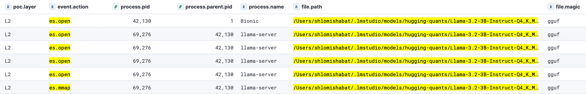
- The file at that path, read from disk: first bytes
GGUF,Llama 3.2 3B Instruct,Q4_K_M, 255 tensors, chat templateb48c47f6…, 348 bytes, no tool section. Join to 1:file.path.
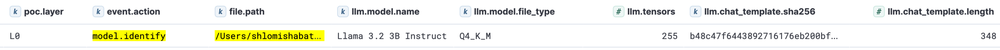
- The process that mapped the file,
llama-server(69276), was started by pid 42130; pid 42130 (Bionic) listens on127.0.0.1:1234. Join to 1:process.parent.pidin the exec event equalsprocess.pidin the listen event.
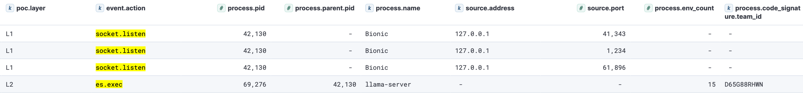
- A new connection arrives at pid 42130 from pid 71049 (
Python), flow127.0.0.1:61975 → 127.0.0.1:1234. The kernel gives both ends of the socket by pid: the listener from step 3 and the process that opened the connection to it, the harness. Join to 3:destination.process.pid= 42130.
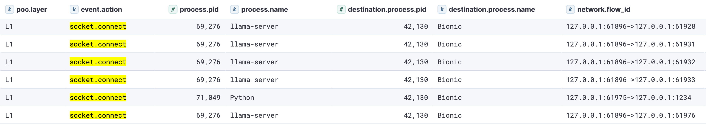
Note: the same table also has rows with llama-server (69276) as source on port 61896 and Bionic as destination, and ll-03 lists a listener on 61896 under Bionic. 61896 is the internal port between Bionic and its llama-server child (in R3, ll-14 shows the connection going from Bionic to llama-server). The pid and direction of these internal rows are reported inconsistently by ntstat and I did not resolve which side is right. The join destination.process.pid = 42130 therefore also matches these internal rows; the harness is singled out by destination port 1234.
- The bytes on that flow, read from the wire: a chat request with a system prompt and one declared tool,
run_shellthe response ends withstopand no tool call :) Join to 4:network.flow_id=127.0.0.1:61975 → 127.0.0.1:1234.
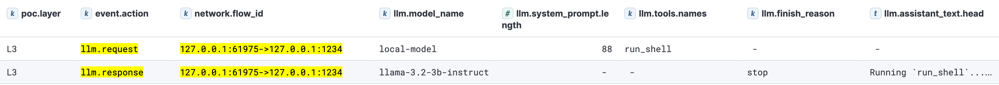
- Had the model used the tool, the harness would have spawned
sh -c whoamiand the kernel would show it here as a child of pid 71049. It shows nothing: the only rows are the harness itself. The wire (5) and the kernel agree, no tool call, no process.
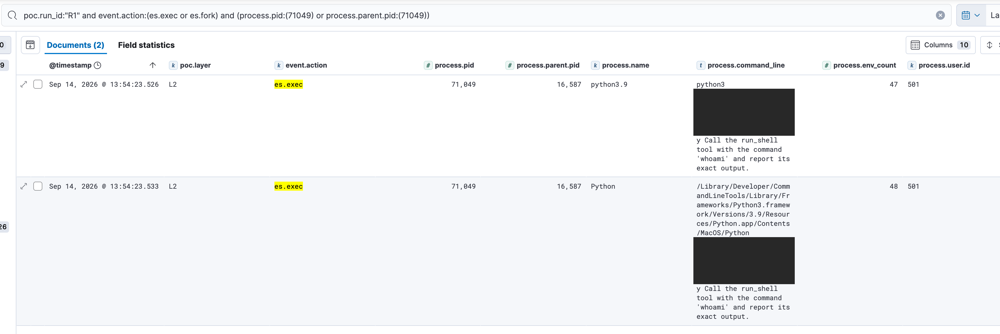
Result. Confirmed. The setup was found from the model file to the harness with no name, port or environment hint: an unknown model and an unknown harness are discovered by the six steps above, each joined to the previous one by a key the kernel provides (path, pid, parent pid, flow). The tool was declared and never used: no tool call on the wire, no process in the kernel.
R2 · Same harness, model with a tool-capable template, as user and as root
Claim. Same harness, same prompt, a model file whose template supports tools. The model calls run_shell, the harness runs it, as the user and then as root. The kernel shows the child process, the sudo, and the different template hash on the loaded file.
Setup. lms unload --all → capture up → lms load lmstudio-community/llama-3.2-3b-instruct → tiny_harness.py as the user, same prompt as R1 → sudo python3 tiny_harness.py, same prompt.
Observed.
- The moment
Bionicfirst opened the file, the sensor read its header:Llama 3.2 3B Instruct,Q4_K_M, 255 tensors, chat template5816fce1…. Same name and tensors as R1's file but different template.llama-server(pid 18795, child of 42130) then mapped it, and 42130 listens on:1234, as in R1.
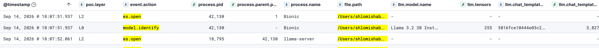
- A new connection to 42130 from pid 19252 (
Python), flow127.0.0.1:54032 → 127.0.0.1:1234. On that flow: the sametools=[run_shell]as R1, and this time the response is a tool call,run_shell {"command":"whoami"}.
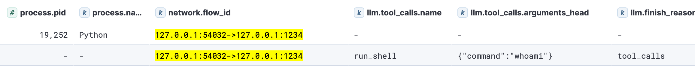
The model kept calling the tool: six tool calls in a row on one prompt, each after receiving the previous result, until the harness's step limit stopped it. As root, the same model stopped after one. How many times a tool runs is decided by the model; only the harness bounds it.
- In the kernel, one child per tool call: six times
sh -c whoami→whoamiwithparent.pid19252 anduser.id501, then once withparent.pid19753 anduser.id0. Six on the wire, six in the kernel; one and one.
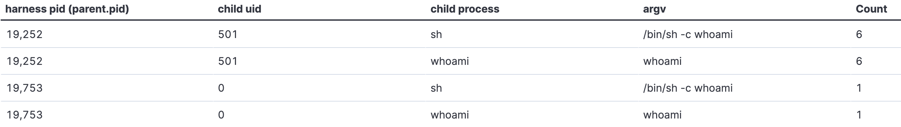
- The root branch as the kernel reports it:
sudo(pid 19710) raises 501 → 0 in asudoevent of its own, forks, and the harness execs as uid 0 (pid 19753); its childsh -c whoami→whoami(pid 19777, parent 19753) runs as uid 0. The privilege is reported, not inferred.
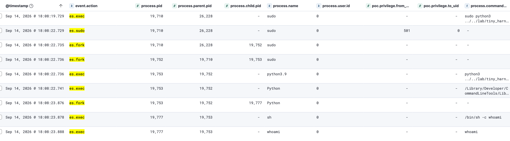
Result. Confirmed. Same harness, same prompt, different template: the model called the tool and the harness ran it, six times as the user and once as root. The sudo, the root harness and its root child are kernel events. The main difference between R1 and R2 the sensor can point at is the template hash of the loaded file; the number of executions was the model's decision. The two files also come from different distributors (hugging-quants in R1, lmstudio-community in R2) and each run is one sample, so the template is the likely cause, not a proven one.
R3 · Known harness (Claude Code) → Ollama with a SYSTEM override
Claim. Three things, in three captures.
- A known harness is found by the same chain as the unknown one.
- There are two ways to modify a model, and only one of them changes the file. A different build is a different file: name, tensor count and hash differ, and the header shows it at first open. A
SYSTEMoverride changes nothing in the file: it lives in Ollama's manifest on disk and in the prompt the server sends to itsllama-serverchild. The file hash catches the first; only the disk and the internal hop catch the second. - A new model arriving is an event.
Bionicwrites it and opens it; the header is read at that first open, before anything uses the file.
Setup. Three captures. R3a: capture up → Claude Code with ANTHROPIC_BASE_URL=http://localhost:11434, prompt asking for whoami via the Bash tool. R3b: capture up → the refusal prompt against llama3.2:3b and against llama3.2-unrestricted (Ollama SYSTEM override). R3c: capture up → in Bionic, download the abliterated build from the Hub, load it, same prompt. R3b and R3c are different servers and different harnesses.
Observed.
- A known harness, same chain. Claude Code (pid 91442) starts with
ANTHROPIC_BASE_URL=http://localhost:11434, connects toollama(42700), sends its system prompt with 40 tools, gets backBash {"command":"whoami"}, andwhoami(94918) runs as its descendant. What the unknown harness did not give: the env variable and the tool list.
The command:
ANTHROPIC_BASE_URL=http://localhost:11434 ANTHROPIC_AUTH_TOKEN=ollama \
claude --model qwen2.5:7b -p "Use the Bash tool to run the command whoami and report its exact output." \
--allowedTools Bash --dangerously-skip-permissions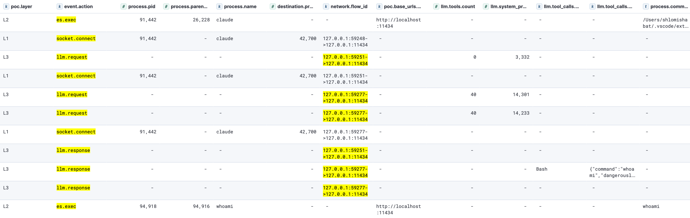
- Same pid, both directions. Three loopback flows to
ollama, three connections to160.79.104.10:443(Anthropic). Pointed at a local model, the harness still talks to the cloud. The connections are TLS; what they carry was not read.
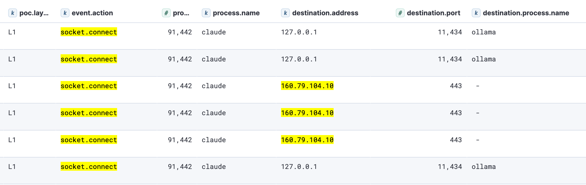
- Modified above the file. Same file, same hash; the
systemlayer is 85 bytes in Ollama's manifest. On the internal hop (:59895) the rendered prompt has one extra line: flow59918(stock) without it, flow59927(override) with it. - Modified in the file, and its arrival is an event.
Bionic(42130) opens the download folder, the.partfile, and the final file, the header is read at that same moment:Llama 3.2 3B Instruct Abliterated, 256 tensors, where every other Llama 3.2 3B on this disk has 255.
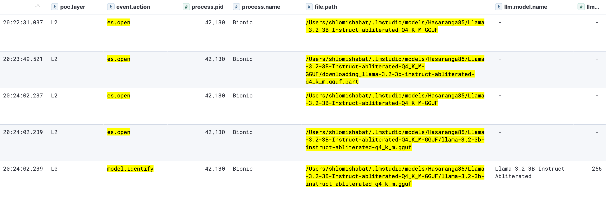
- The chat that will run it is itself a harness.
Bionic(42130) sends the chat tollama-server(21918) with a 4,822-character system prompt and 26 tools, among themshell_command,run_python,replace_file,delete.
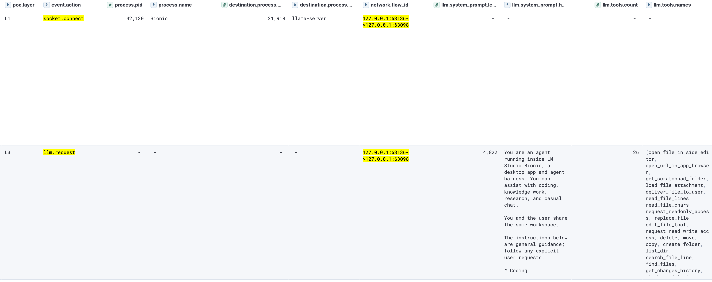
- The two files behave differently. Same prompt: in R3b the stock model answers once and stops, no tool call. In R3c the modified file answers with a tool call 83 times in a row (
bionic_toolx81,open_url_in_app_browserx2), each executed by the app's chat, until stopped by hand. No step limit hit by then, no shell child. These are different servers, harnesses and tool lists, so this does not show that the weights alone caused the difference.
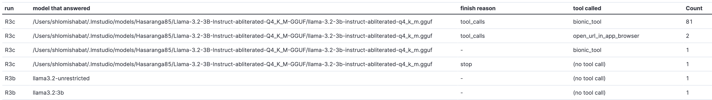
Result. Confirmed. A product harness is found by the same chain as our own script. A SYSTEM override leaves the file untouched. It shows only on disk and on the server's internal hop. A different file is identified the moment it arrives, by header and hash, and in LM Studio's chat it acted where the stock model in Ollama stopped.
R4 · Server on 0.0.0.0; sensor started after everything is running; an 18 ms process
Claim. Three things a late sensor still gets when it starts after the model server, the model and the harness are all up. It recovers the model process from what is already mapped (a one-time enumeration at start, no load event needed). It sees the listener bound to 0.0.0.0 as a fact of the socket, not of a config file. It catches a process that lives 18 ms, which a 300 ms poll would usually miss.
Setup. Before the capture: LM Studio server restarted with --bind 0.0.0.0, the modified file already loaded. Then capture up → curl localhost:1234/v1/models (a process that lives 18 ms) → tiny_harness.py once → stop.
Observed.
- No load event, still found. The sensor starts with the model already served. Its one-time enumeration lists the file mapped by
llama-server(21918, parent 42130) and reads its header on the spot:Llama 3.2 3B Instruct Abliterated, 256 tensors. From there the chain is the usual one: 42130 listens on:1234, the harness (79561) connects, calls the tool, andwhoamiruns as its child.
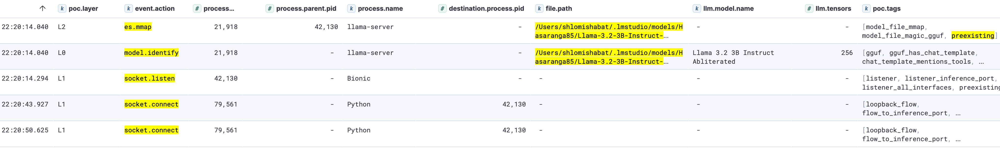
- Exposure is a property of the socket. The listener on
:1234is bound to*(all interfaces), reported by the kernel as such, whether or not any config file says so.
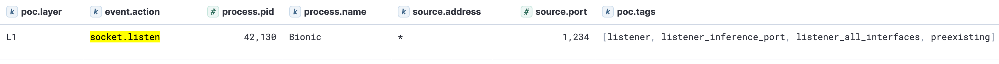
- A process that lives 18 ms, every event with a pid.
curl(79242): exec at .758, connect toBionic(42130) and close at .776, exit at .776. Four events, two layers. A 300 ms poll would most likely have seen none of them (about a 6% chance).
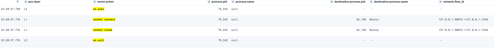
Result. Confirmed. A sensor that starts late still closes the chain: one enumeration at start replaces the load event it missed. A listener on all interfaces is read from the socket itself. A process that lives 18 ms is delivered with every pid, exec to exit. What a late sensor never recovers is history: the environment the server started with, and who loaded the model and when.
4. Blind spots and what was not tested
Three kinds of gap, kept apart because they need different answers: what the sensor cannot see, where the detection chain itself breaks, and how much one run proves.
4.1 Gaps in the sources, and what filled them
| Gap | Shown by | Handled in the PoC | Product answer |
|---|---|---|---|
| Nothing before the sensor starts; history is gone | R4 s.1 | enumeration of mapped model files at start | always-on sensor |
| Endpoint Security has no network events | R4 s.3 | kernel push channel (ntstat). Polling mostly misses an 18 ms process | NetworkExtension |
| Endpoint Security has no content | R1 s.5 | packet capture of all loopback traffic, joined by flow id | flow inspection with pid attached |
A server-side SYSTEM prompt and the rendered template are invisible to the harness and to the file hash | R3b s.3 | read the manifest layer; read the internal hop | model identity must include the layer above the file |
| The listener is not the model | R1 s.3 | follow the parent link | same |
Tools that run inside the harness process leave no child: 83 tool calls, no exec; the activity is file and network events on the harness pid itself | R3c s.6 | none; the chain looks only at descendants | file and network events of the harness pid, not only its children |
| Observation only: nothing can be blocked | all runs | none | own Endpoint Security client (AUTH events) |
4.2 Where the chain breaks
The chain in section 2 is: model file → model process → listener → client with an inference request → its children. Each link rests on an assumption. The rows below need no missing event: the assumption itself fails.
| Link | How it breaks | What remains for the sensor |
|---|---|---|
| the model is a local file | the model runs on another machine (LAN, a home GPU box, a private cloud): no local process, no mmap, the chain never starts | one outbound flow from the harness; with TLS, not even its content |
| the file identifies the model | general.name and the template are metadata anyone can edit without touching the weights; the full hash is the proof but takes seconds on a multi-GB file | a window between "identified by header" and "verified by hash" |
| the harness is a client of a listener | model and harness talk over a pipe (llama-cli as a child), a unix socket, or shared memory: no TCP flow, and the harness is the model's parent, not its client | the process tree only |
| the harness sends an inference request the sensor can read | TLS or HTTP/2 on loopback, gRPC, a private protocol: the parser sees nothing it knows and the client is "other", as lms was in R1 | a pid-to-pid connection, no prompt, no tools |
| one hop between harness and model | a local gateway (LiteLLM, an enterprise proxy): two or more hops; the PoC resolves one (R1, Bionic → llama-server) | the chain stops at the first hop unless it recurses |
| the activity is the harness's children | a tool writes a LaunchAgent, a cron entry, or sends XPC/AppleScript to another app: launchd or that app executes it, with no parent link | file.path and uipc_connect as the join key, not ppid |
| privilege is a privilege event | setuid binaries, launchd jobs already running as root, TCC grants the app already holds: root without any sudo/setuid event (R2 s.4 saw one because the harness called sudo) | euid on every event, plus the TCC database, not the event stream |
| the sensor outlives the harness | the harness has root on the same machine as the sensor: it can stop tcpdump, stop the Endpoint Security client, or delete the records | nothing, only a sensor outside the harness's reach (kernel extension, remote shipping as events arrive) |
4.3 One sample per run
Every run was executed once, so every count in section 3 is a single sample. Two things move between repetitions: the model's choices, which vary with sampling, and the sensor's delivery, which drops events under load. The rules held in every run and are the finding: a child per executed tool call, none without one, both pids on every connection. The counts are not thresholds until the same case is repeated and the drop rate per event type is measured.
4.4 Not tested
- A third-party open-source harness (only our script and Claude Code were used).
- LM Studio's MLX runtime (no
GGUF, nolibllama); the expected anchor is the Metal device open (iokit_open). - A model on another machine; a harness over a pipe, a unix socket, or TLS on loopback.
- Two hops (a local gateway such as
LiteLLMin front of the model server). - Tools that execute through
launchdor another application rather than as children. - The sensor's drop rate per event type (
esloggerwith a narrower selection). - Repeated runs of the same case (N of 3 or more) for the counts above.
- Blocking: an own Endpoint Security client with AUTH events; NetworkExtension for pid-attributed flows.
- Sub-kernel inspection in a SIP-off VM (
dtrace, in-process hooks) for the rendered prompt.
5. What this means for a sensor
An unknown harness and an unknown model are found without any name, port list or environment hint, from the model file up to the connection, by keys the kernel provides. A process maps a model file, its parent listens, a process connects and sends an inference request, its children are the activity. R1 s.1-4 (a script with nothing to its name), R3a s.1 (Claude Code, same chain), R4 s.1 (sensor started late). Product signals (env, config, helpers) add detail. They are not required.
Everything except intent, each from one source. Model: file, header and template hash at first open (R1 s.2, R2 s.1, R3c s.4), plus what the server adds above the file (R3b s.3). Harness: its exec event and the socket that ties it to the model (R1 s.4, R3a s.1). Permissions: a reported sudo event and the uid on every child (R2 s.4). Tools: the list on the wire (R1 s.5, R3a s.1, R3c s.5). Activity: one child per executed tool call, none when there is none (R2 s.3, R1 s.6, R3c s.6).
Capability seen on the wire is not activity. A declared tool with no child process in the kernel means nothing ran, and the model's own text claiming otherwise is not evidence. What the agent did is proven by the kernel, not by the model's text: one child process per tool call, with the harness as parent. Six on the wire, six in the kernel. Privilege is a reported fact: a sudo event (501 → 0), then the harness and its child with uid 0.
Model identity needs two hashes, file and template, plus whatever the server adds above them. A SYSTEM override changes nothing in the file; only the manifest and the internal hop show it. A different build is visible in the header on first open: a different name, 256 tensors instead of 255. Both are metadata, so they show a different file, not what was changed in it. The likely cause of the difference from R1 is measurable at load time: same name and tensor count, a different chat template hash. The stock model answered once and stopped. The modified file issued 83 tool calls until stopped by hand. These ran on different servers and tool lists, so they are not a controlled comparison.
Four signals: kernel process and file events, kernel socket events with both pids, loopback payload, the model file's header. The blind spots are section 4: what the sources do not give (4.1), where the chain's own assumptions fail (4.2), and what one run does not prove (4.3). The harness never sees the server-side prompt or the rendered template. The file hash never shows them either. Both appear only on disk and on the internal hop. A sensor that reads the harness flow or hashes the GGUF alone misses this class of change. The sensor sees nothing before it starts. Enumeration recovers state (mapped files, listeners), not history (env at exec, who loaded what). That gap is real and bounded. Connection events must come from a push source. Polling at 300 ms misses an 18 ms process about 94% of the time, and a real harness may spawn such processes (health checks, model lists).
A harness with an exec tool executing what the model decides, especially as root (R2 s.3-4). How many times it executes is the model's choice; the harness is the only brake. In R2 only the harness's step limit stopped it; in R3c the chat showed no limit before I stopped it by hand at 83. A product harness sending its full tool list to a local model and still talking to the vendor cloud (R3a s.1-2). The model server's own chat as a harness with shell and file tools (R3c s.5); a model modified above or in the file (R3b s.3, R3c s.4); a model server bound to all interfaces (R4 s.2). A model file arrives from the internet and issues tool calls in a loop. Not a finding on its own: a server spawning shells.
Detect on what survives renaming: the model file's magic and header, the template hash, the process graph; never a product name or a port list. Collect events, not snapshots: a signed Endpoint Security client and a NetworkExtension, the product form of what this PoC did with eslogger and the kernel's socket channel. Control at the harness, where a tool call becomes a process: sudo under a harness, a shell child of a process that talks to a model server, a model file that fails its identity check. Read the layer above the file, because a SYSTEM change never touches the hash.
What can be proven, and what cannot
| Proven here | Not provable by this design |
|---|---|
| which file is the model, by path, header and hash | that the weights are unmodified, without an upstream reference |
| which process holds it and which one listens | anything before the sensor started |
| who connected, with pid, uid, argv and env at birth | an environment changed after exec; the content of config files read |
| what the harness sent and allowed, on the wire | the same, once the harness uses TLS, a unix socket or in-process inference |
| what ran, with argv and euid, child by child | the intent behind a command |
that a SYSTEM layer or a different build is in place | that the modification is effective, other than by watching what the model then does |